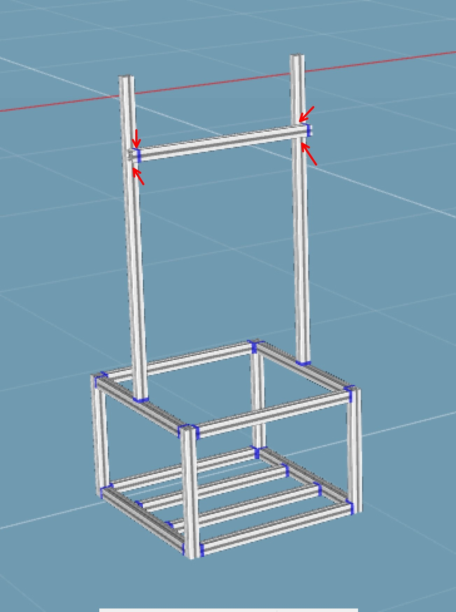

居家笼 (Home Cage) 安装教程 — 请结合 3D 模型图与视频教程进行施工
🎥 角钢（角件）连接技巧
重点：观察 T 型螺母如何在槽内旋转并锁紧🎥 整体组装流程参考（非本架子）
⚠️ 仅为参考视频，展示铝型材通用组装手法，并非本架子的对应安装视频🖼 目标结构参考图

🔴 红色箭头处：高度可调节滑动连接点
首先安装底层底座：
使用角件连接，注意先不要完全锁死螺丝，方便后期校正方正度。
取 470mm 型材用作底座中间的加强筋：
在底盘的四个角上方安装短立柱，然后将顶部的边框连接到立柱上，构成一个稳固的长方体底座盒子。
在顶层边框上安装摄像头高度调整立柱：
旷场安装比较简单，将四个面板互相卡上安装即可。
旷场组装完成后，从铝架底座的 上方 放下去即可就位。
📥 资源下载